Seeking to Be Found Faithful
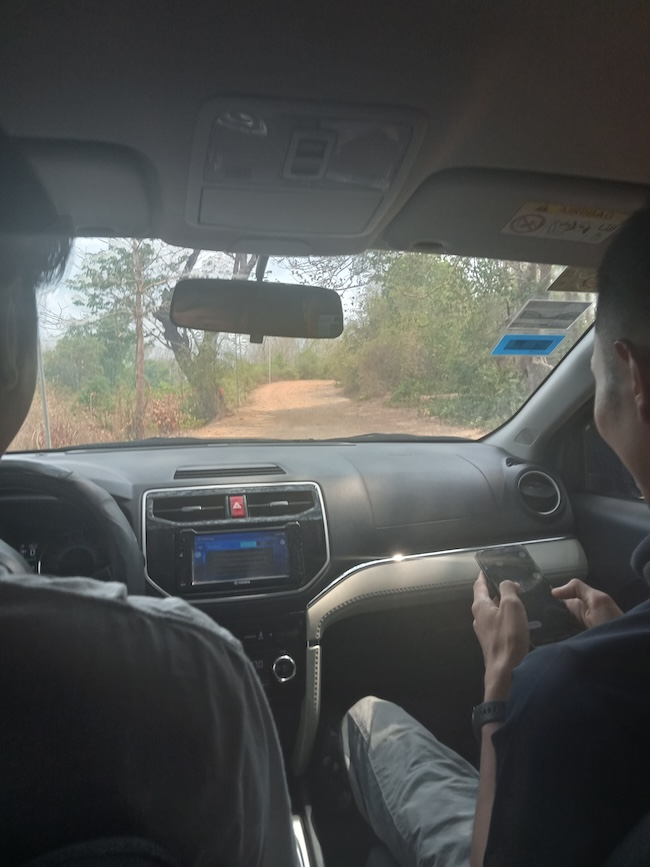 On the road to Ratanakiri (RTK) with Phnom Penh Bible School students for Pastors’ School
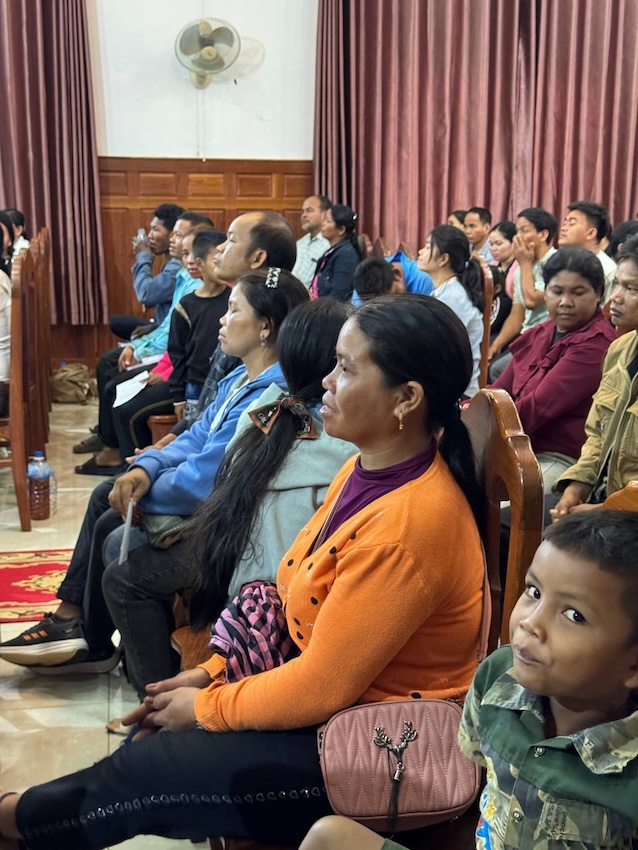 After finishing Romans, the Pastors’ school taught on biblical families and marriages 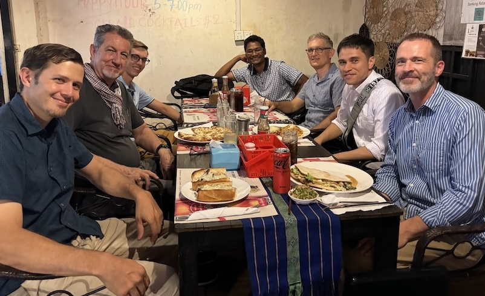 Most of the teachers for the Pastors’ school in April (in RTK)
As the semester draws to a close, it provides a good opportunity for reflection. This upcoming semester will, Lord willing, be my last at the Phnom Penh Bible School (PPBS). I have been teaching at PPBS for over 3 years now (as of March), and it will be bittersweet moving on.
We are however looking forward to what’s next. Lord willing we will be joining a team in Ratanakiri Province to do theological education among the pastors up there, most of whom are part of ethnic minority tribes.
One part of this that we are looking forward to, is the team dynamic, particularly the opportunity to learn from the experience of the veteran missionaries up there. We have benefited immensely from the team here in Phnom Penh, and we are sure that we will gain from the men and women up there also, as we have learned so much from them already even from our brief interactions that we have had thus far.
April 2024 Training
I wanted to also give a quick report from the training that they put on in April. Thank you again for all of your prayers, the feedback has been very positive. The topic for the training was on the family Life of a Christian leader, and it seemed like this was particularly timely for the pastors and their wives and the church here overall. 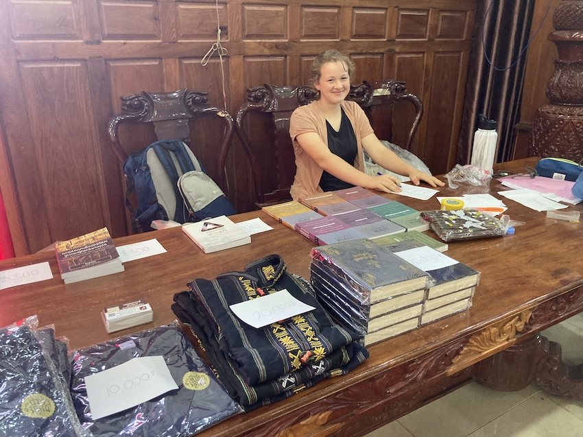 A missionary friend’s daughter running the book table – selling lots of books from Plovpit (our translation team’s biblical resources) and more!
Most Christians here are still first generation Christians, and one side effect of not having grown up in Christian homes is a lack of examples to follow. Many believers (including pastors and their wives) want to conduct their marriage and raise their children in a biblical manner, but lack good role models to look up to as well as training in regard to God’s plan for the family. Of course one does not have to grow up into a Christian family in order to see good role models, particularly when there are other families in the church that one can look to and learn from. However, when all of the other families in the church including the pastor is in the same boat as yourself, then it can be difficult to know whom to look to for help.
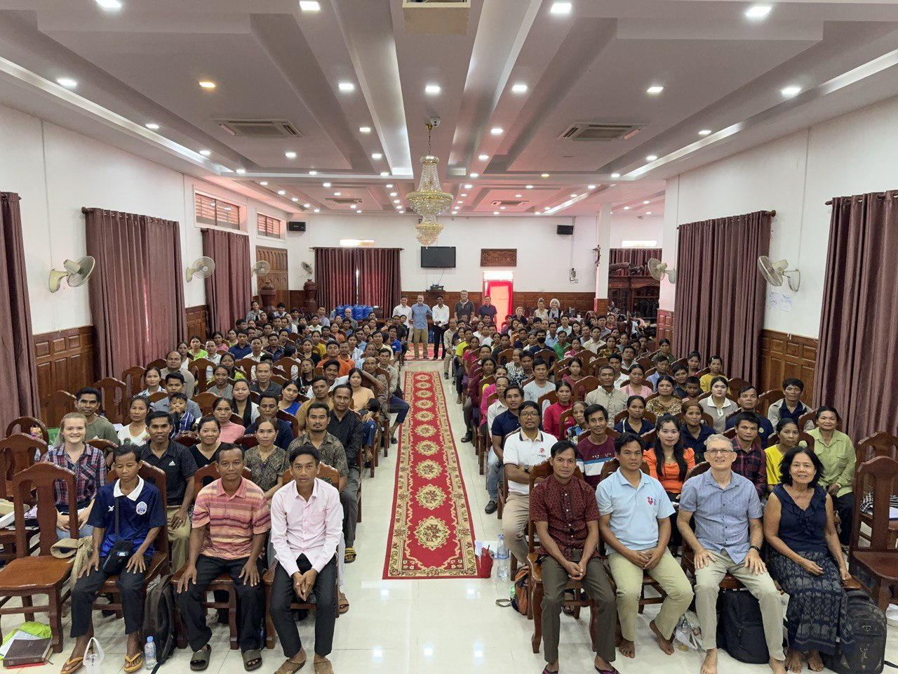 The whole group
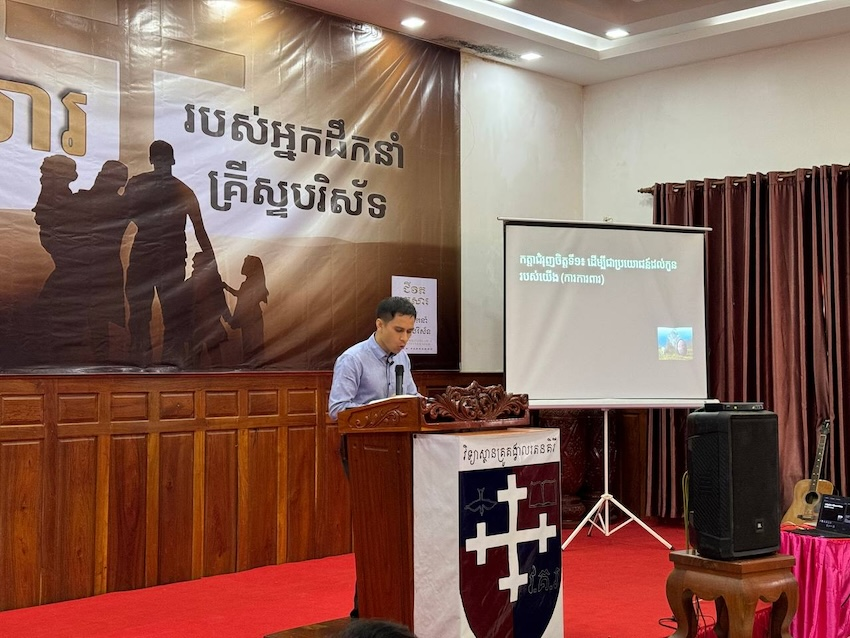 Ryan teaching on the importance of children obeying their parents 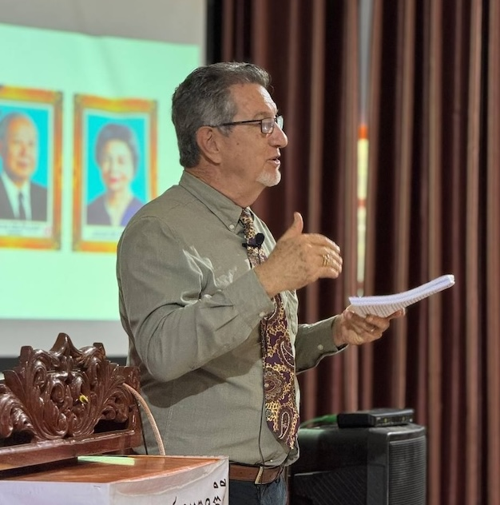 JD Crowley, who started the Pastors’ school, has served 30+ years in Cambodia
 We are praying the teaching will impact the hearts of many of these families
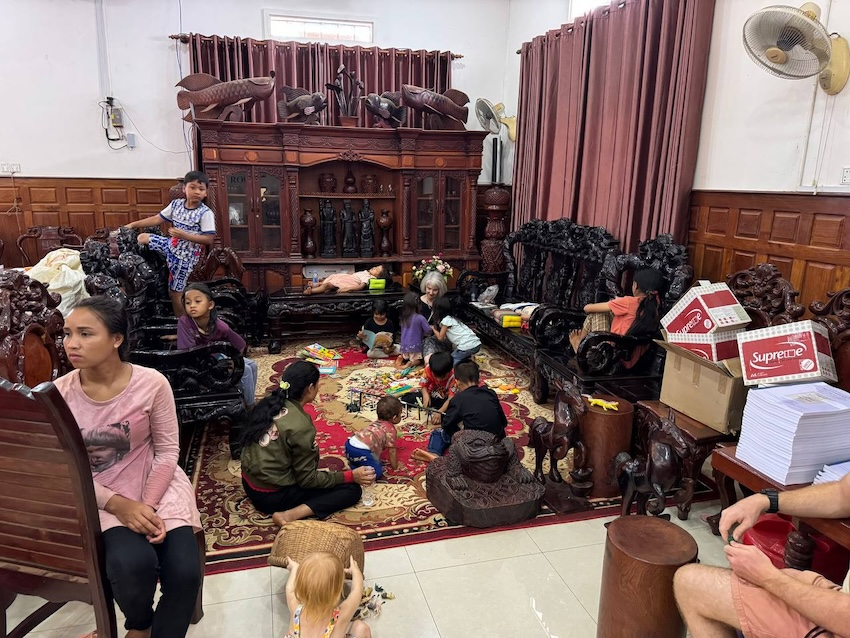 Some child care was also provided that allowed wives to join the sessions
We are praying the teaching will impact the hearts of many of these families
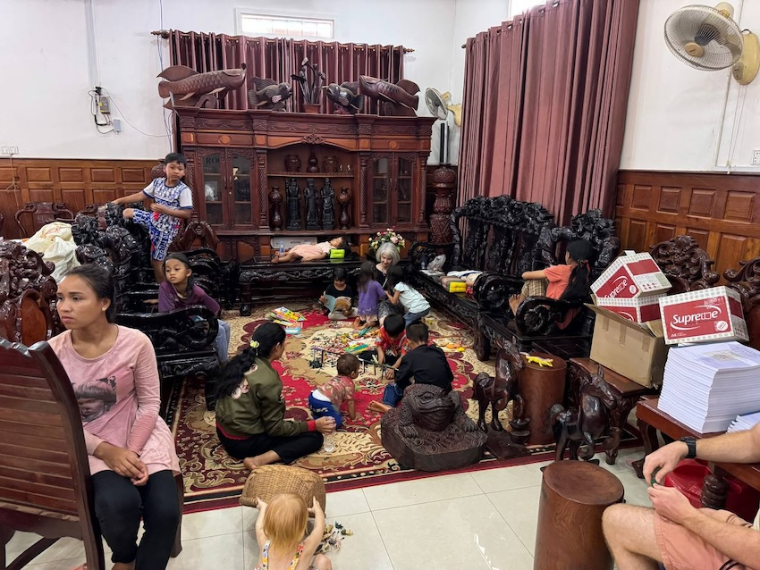 Some child care was also provided that allowed wives to join the sessions
Please pray for continued grace in this respect for the pastors and churches of Cambodia, and that they would build a firm foundation for future generations of Christians in Cambodia to follow after. Pray for husbands as they seek to love their wives as Christ loves the Church, and for wives as they submit and support their husbands as the Church to Christ. Pray for parents to train up their children in the training and admonition of the Lord, and particularly for fathers that they would take responsibility for the discipleship of their household. Pray also for the many mothers whose husband does not yet know Christ, but are seeking to raise their children in the Lord on their own.
The challenges are great and many, and in many ways it feels like an uphill battle - indeed humanly speaking, the obstacles are insurmountable. So many biblical principles for parenting are incredibly countercultural, and the pastors were discussing how often their neighbors would mock them for trying to live biblically - for example, for men in the family to help with household chores or show affection to their wives. However, we know that greater is He that is in us than he that is in the world, and we have great hope for the future of the Church here. We must not underestimate what it means to have the Holy Spirit of God himself dwelling in each of us.
Along the same line, pray for the children, that even now the Lord would be raising up future Leaders of the church among the boys and girls of today.
In previous trainings, mostly only the men participated, however this time due to the nature of the topic, their wives were all so invited and some child-care was also provided. This being the case, it was the first time meeting many of the pastor’s wives and children.
As mentioned above, there are definitely great challenges that still need to be overcome, but there are also very many encouraging signs of lives and families being transformed by the gospel. One evening in particular, we were sitting at the back of the church drinking tea and winding down for the night, and got to hear a very encouraging testimony of how some of the pastors were already making a difference in their village by the light of Christ shown through their lives. They shared about how when they first started trying to apply God’s plan for the family in their own lives, their neighbors would make fun of them, for example calling the men weak and emasculated for treating their wives with respect and dignity. However, as time went on and their godly lives bore fruit which showed itself in their families, their neighbors started to take notice, and wanted to learn how to do it themselves!
Pray for the light of Christ to continue to shine in the neighborhoods and villages of Cambodia.
Also, two of the students from PPBS also came with me from Phnom Penh. Although there are no end to the number of trainings that go on in Phnom Penh, the students recognized that there is something different and special about the trainings that they have in Ratanakiri. For one student, Ponleu, this is his second time joining in on the training in Ratanakiri. He isn’t married yet, but wants to know what the Bible has to say about Christian families so that he is ready for the future. Another student and his wife also came along with their 2 year old daughter. It is a 9 hour trek up one way, but all of us gained from going and there are no regrets!
Please pray for the families (current and future) of these PPBS students as well.
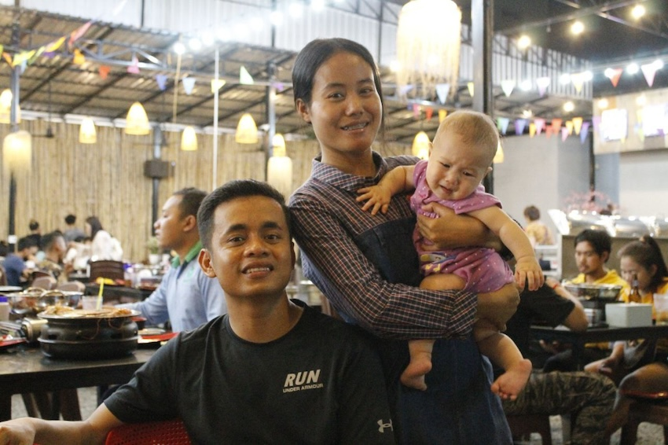 A couple from the province who came to study at the Bible school 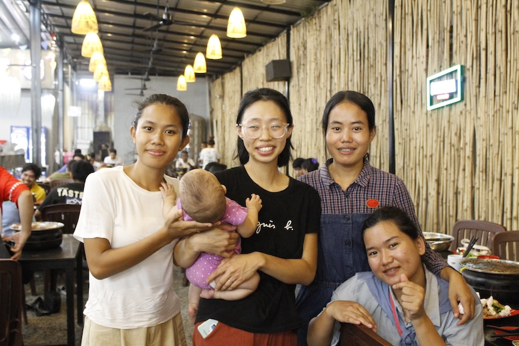 Ryan’s small group at the Bible school went out for dinner together! 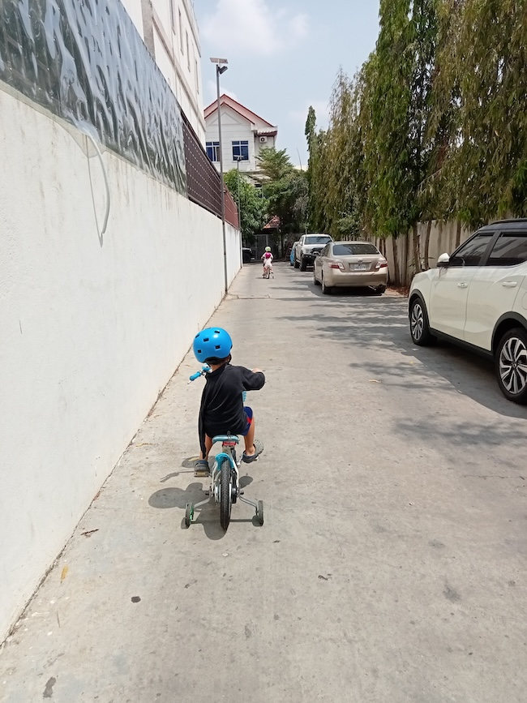 Enjoying time in our neighborhood while we still can 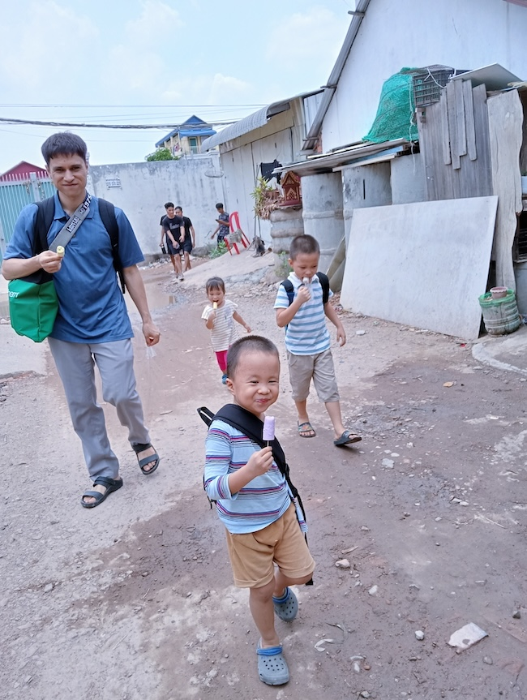 After church with 14-cent ice cream! 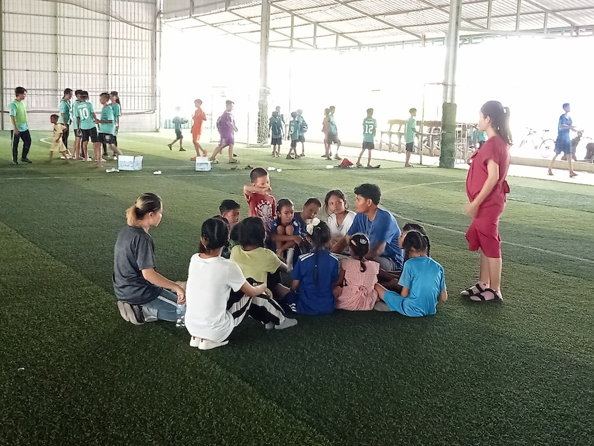 Spending time with PPBS alumni for International Childrens’ Day